공조냉동기계기사(구) (2019-04-27 기출문제)
1과목: 기계열역학
1. 어떤 시스템에서 공기가 초기에 290K에서 330K로 변화하였고, 이 때 압력은 200kPa에서 600kPa로 변화하였다. 이 때 단위 질량당 엔트로피 변화는 약 몇 kJ/(kg·K)인가? (단, 공기는 정압비열이 1.006 kJ/(kg·K)이고, 기체상수가 0.287 kJ/(kg·K)인 이상기체로 간주한다.)
- 0.445
- -0.445
- 0.185
- -0.185
(정답률: 51%)

2. 체적이 500cm3인 풍선에 압력 0.1MPa, 온도 288K의 공기가 가득 채워져 있다. 압력이 일정한 상태에서 풍선 속 공기 온도가 300K로 상승했을 때 공기에 가해진 열량은 약 얼마인가? (단, 공기는 정압비열이 1.0⑤kJ/(kg·K), 기체상수가 0.287kJ/(kg·K) 인 이상기체로 간주한다.)
- 7.3 J
- 7.3 kJ
- 14.6 J
- 14.6 kJ
(정답률: 50%)
3. 어떤 사이클이 다음 온도(T)-엔트로피(s)선도와 같을 때 작동 유체에 주어진 열량은 약 몇 kJ/kg 인가?
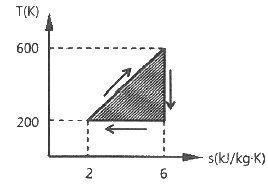
- 4
- 400
- 800
- 1600
(정답률: 65%)
4. 효율이 40%인 열기관에서 유효하게 발생되는 동력이 110kW 라면 주위로 방출되는 총 열량은 약 몇 kW 인가?
- 375
- 165
- 135
- 85
(정답률: 63%)
5. 500W의 전열기로 4kg의 물을 20℃에서 90℃까지 가열하는데 몇 분이 소요되는가? (단, 전열기에서 열은 전부 온도 상승에 사용되고 물의 비열은 4180 J/(kg·K) 이다.)
- 16
- 27
- 39
- 45
(정답률: 61%)
6. 카르노 사이클로 작동되는 열기관이 고온체에서 100 kJ 의 열을 받고 있다. 이 기관의 열효율이 30%라면 방출되는 열량은 약 몇 kJ 인가?
- 30
- 50
- 60
- 70
(정답률: 62%)
7. 100℃와 50℃ 사이에서 작동하는 냉동기로 가능한 최대성능계수(COP)는 약 얼마인가?
- 7.46
- 2.54
- 4.25
- 6.46
(정답률: 67%)
8. 압력이 0.2 MPa이고, 초기 온도가 120℃ 인 1kg의 공기를 압축비 18로 가열 단열 압축하는 경우 최종온도는 약 몇 ℃ 인가? (단, 공기는 비열비가 1.4인 이상기체이다.)
- 676℃
- 776℃
- 876℃
- 976℃
(정답률: 45%)
9. 수증기가 정상과정으로 40m/s의 속도로 노즐에 유입되어 275m/s로 빠져나간다. 유입되는 수증기의 엔탈피는 3300kJ/kg, 노즐로부터 발생되는 열손실은 5.9kJ/kg일 때 노즐 출구에서의 수증기 엔탈피는 약 몇 kJ/kg 인가?
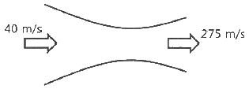
- 3257
- 3024
- 2795
- 2612
(정답률: 48%)
10. 용기에 부착된 압력계에 얽힌 계기압력이 150 kPa 이고 국소대기압이 100 kPa일 때 용기 안의 절대압력은?
- 250 kPa
- 150 kPa
- 100 kPa
- 50 kPa
(정답률: 70%)
11. R-12를 작동 유체로 사용하는 이상적인 증기압축 냉동 사이클이 있다. 여기서 증발기 출구 엔탈피는 229 kJ/kg, 팽창밸브 출구 엔탈피는 81 kJ/kg, 응축기 입구 엔탈피는 255 kJ/kg 일 때 이 냉동기의 성적계수는 약 얼마인가?
- 4.1
- 4.9
- 5.7
- 6.8
(정답률: 64%)
12. 어떤 시스템a에서 유체는 외부로부터 19kJ의 일을 받으면서 167kJ의 열을 흡수하였다. 이 때 내부에너지의 변화는 어떻게 되는가?
- 148 kJ 상승한다.
- 186 kJ 상승한다.
- 148 kJ 감소한다.
- 186 kJ 감소한다.
(정답률: 60%)
13. 그림과 같이 실린더 내의 공기가 상태 1에서 상태 2로 변화할 때 공기가 한 일은? (단, P는 압력, V는 부피를 나타낸다.)
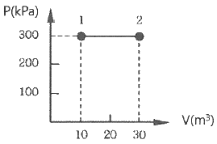
- 30 kJ
- 60 kJ
- 3000 kJ
- 6000 kJ
(정답률: 69%)
14. 보일러에 물(온도 20℃, 엔탈피 84kJ/kg)이 유입되어 600 kPa의 포화증기(온도 159℃, 엔탈피 2757kJ/kg) 상태로 유출된다. 물의 질량유량이 300 kg/h 이라면 보이럴에 공급된 열량은 약 몇 kW 인가?
- 121
- 140
- 223
- 345
(정답률: 56%)
15. 압력이 100 kPa 이며 온도가 25℃ 인 방의 크기가 240m3이다. 이 방에 들어있는 공기의 질량은 약 몇 kg 인가? (단, 공기는 이상기체로 가정하며, 공기의 기체상수는 0.287 kJ/(kg·K) 이다.)
- 0.00357
- 0.28
- 3.57
- 280
(정답률: 63%)
16. 클라우지우스(Clausius) 부등식을 옳게 표한한 것은? (단, T는 절대온도, Q는 시스템으로 공급된 전체 열량을 표시한다.)
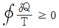
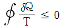
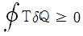
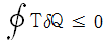
(정답률: 67%)
17. Van der Waals 상태 방적식은 다음과 같이 나타낸다. 이 식에서
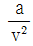
, b는 각각 무엇을 의미하는 것인가? (단, P는 압력, v는 비체적, R은 기체상수, T는 온도를 나타낸다.)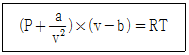
- 분자간의 작용 인력, 분자 내부 에너지
- 분자간의 작용 인력, 기체 분자들이 차지하는 체적
- 분자간의 질량, 분자 내부 에너지
- 분자 자체의 질량, 기체 분자들이 차지하는 체적
(정답률: 64%)
18. 가역 과정으로 실린더 안의 공기를 50 kPa, 10℃ 상태에서 300 kPa 까지 압력(P)과 체적(V)의 관계가 다음과 같은 과정으로 압축할 때 단위 질량당 방출되는 열량은 약 몇 kJ/kg 인가? (단, 기체 상수는 0.287 kJ/(kg·K) 이고, 정적비열은 0.7 kJ/(kg·K) 이다.)
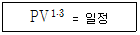
- 17.2
- 37.2
- 57.2
- 77.2
(정답률: 36%)
19. 등엔트로피 효율이 80%인 소형 공기터빈의 출력이 270 kJ/kg 이다. 입구 온도는 600 K 이며, 출구 압력은 100 kPa 이다. 공기의 정압비열은 1.004 kJ/(kg·K), 비열비는 1.4 일 때, 입구 압력(kPa)은 약 몇 kPa 인가? (단, 공기는 이상기체로 간주한다.)
- 1984
- 1842
- 1773
- 1621
(정답률: 31%)
20. 화씨 온도가 86°F 일 때 섭씨 온도는 몇 ℃ 인가?
- 30
- 45
- 60
- 75
(정답률: 62%)
2과목: 냉동공학
21. 냉각탑의 성능이 좋아지기 위한 조건으로 적절한 것은?
- 쿨링레인지가 작을수록, 쿨링어프로치가 작을수록
- 쿨링레인지가 작을수록, 쿨링어프로치가 클수록
- 쿨링레인지가 클수록, 쿨링어프로치가 작을수록
- 쿨링레인지가 클수록, 쿨링어프로치가 킆수록
(정답률: 60%)
22. 다음 중 절연내력이 크고 절연물질을 침식시키지 않기 때문에 밀폐형 압축기에 사용하기에 적합한 냉매는?
- 프레온계 냉매
- H2O
- 공기
- NH3
(정답률: 66%)
23. 어떤 냉동기의 증발기 내 압력이 245 kPa 이며, 이 압력에서의 포화온도, 포화액 엔탈피 및 건포화증기 엔탈피, 정압비열은 조건과 같다. 증발기 입구 측 냉매의 엔탈피가 455kJ/kg이고, 증발기 출구 측 냉매온도가 –10℃의 과열증기일 경우 증발기에서 냉매가 취득한 열량(kJ/kg)은?
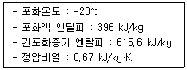
- 167.3
- 152.3
- 148.3
- 112.3
(정답률: 34%)
24. 냉동능력이 1 RT인 냉동장치가 1kW의 압축동력을 필요로 할 때, 응축기에서의 방열량(kW)은?
- 2
- 3.3
- 4.8
- 6
(정답률: 62%)
25. 냉동사이클에서 응축온도 상승에 따른 시스템의 영향으로 가장 거리가 먼 것은? (단, 증발온도는 일정하다.)
- COP 감소
- 압축비 증가
- 압축기 토출가스 온도 상승
- 압축기 흡입가스 압력 상승
(정답률: 62%)
26. 어떤 냉장고의 방열적 면적이 500m2, 열통과열이 0.311 W/m2·℃일 때, 이 벽을 통하여 냉장고 내로 침입하는 열량(kW)은? (단, 이 때의 외기온도는 32℃이며, 냉장고 내부온도는 –15℃ 이다.)
- 12.6
- 10.4
- 9.1
- 7.3
(정답률: 69%)
27. 2차유체로 사용되는 브라인의 구비 조건으로 틀린 것은?
- 비등점이 높고, 응고점이 낮을 것
- 점도가 낮을 것
- 부식성이 없을 것
- 열전달률이 작을 것
(정답률: 67%)
28. 냉매 배관 내에 플래시 가스(flash gas)가 발생했을 때 나타나는 현상으로 틀린 것은?
- 팽창밸브의 능력 부족 현상 발생
- 냉매부족과 같은 현상 발생
- 액관 중의 기포 발생
- 팽창밸브에서의 냉매 순환량 증가
(정답률: 77%)
29. 단면이 1m2인 단열재를 통하여 0.3kW의 열이 흐르고 있다. 이 단열재의 두께는 2.5cm 이고 열전도계수가 0.2 W/m·℃일 때 양면 사이의 온도차(℃)는?
- 54.5
- 42.5
- 37.5
- 32.5
(정답률: 70%)
30. 여러 대의 증발기를 사용할 경우 증발관 내의 압력이 가장 높은 증발기의 출구에 설치하여 압력을 일정 값 이하로 억제하는 장치를 무엇이라고 하는가?
- 전자밸브
- 압력개폐기
- 증발압력조정밸브
- 온도조절밸브
(정답률: 78%)
31. 다음 그림은 2단 압축 암모니아 사이클을 나타낸 것이다. 냉동능력이 2RT인 경우 저단압축기의 냉매순환량(kg/h)은? (단, 1RT는 3.8kW이다.)
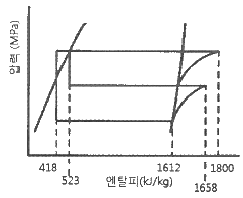
- 10.1
- 22.9
- 32.5
- 43.2
(정답률: 60%)
32. 다음 팽창밸브 중 인버터 구동 가변 용량형 공기조화장치나 증발온도가 낮은 냉동장치에서 팽창밸브의 냉매유량 조절 특성 향상과 유량제어 범위 확대 등을 목적으로 사용하는 것은?
- 전자식 팽창밸브
- 모세관
- 플로트 팽창밸브
- 정압식 팽창밸브
(정답률: 51%)
33. 식품의 평균 초온이 0℃일 때 이것을 동결하여 온도중심점을 –15℃까지 내리는 데 걸리는 시간을 나타내는 것은?
- 유효동결시간
- 유효냉각시간
- 공칭동결시간
- 시간상수
(정답률: 68%)
34. 냉동장치를 운전할 때 다음 중 가장 먼저 실시하여야 하는 것은?
- 응축기 냉각수 펌프를 기동한다.
- 증발기 팬을 기동한다.
- 압축기를 기동한다.
- 압축기의 유압을 조정한다.
(정답률: 60%)
35. 다음 중 냉매를 사용하지 않는 냉동장치는?
- 열전 냉동장치
- 흡수식 냉동장치
- 교축팽착식 냉동장치
- 증기압축식 냉동장치
(정답률: 69%)
36. 축 동력 10kW, 냉매순환량 33kg/min인 냉동기에서 증발기 입구 엔탈피가 406kJ/kg, 증발기 출구 엔탈피가 615kJ/kg, 응축기 입구 엔탈피가 632kJ/kg 이다. ㉠실제 성능계수와 ㉡이론 성능계수는 각각 얼마인가?
- ㉠ 8.5, ㉡ 12.3
- ㉠ 8.5, ㉡ 9.5
- ㉠ 11.5, ㉡ 9.5
- ㉠ 11.5, ㉡ 12.3
(정답률: 57%)
37. 암모니아용 압축기의 실린더에 있는 워터재킷의 주된 설치 목적은?
- 밸브 및 스프링의 수명을 연장하기 위해서
- 압축효율의 상승을 도모하기 위해서
- 암모니아는 토출온도가 낮기 때문에 이를 방지하기 위해서
- 암모니아의 응고를 방지하기 위해서
(정답률: 51%)
38. 스크류 압축기의 특징에 대한 설명으로 틀린 것은?
- 소형 경량으로 설치면적이 작다.
- 밸브와 피스톤이 없어 장시간의 연속운전이 불가능하다.
- 암수 회전자의 회전에 의해 체적을 줄여 가면서 압축한다.
- 왕복동식과 달리 흡입밸브와 토출밸브를 사용하지 않는다.
(정답률: 67%)
39. 고온부의 절대온도를 T1, 저온부의 절대온도를 T2, 고온부로 방출하는 열량을 Q1, 저온부로부터 흡수하는 열량을 Q2라고 할 때, 이 냉동기의 이론 성적계수(COP)를 구하는 식은?
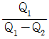
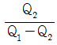
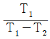
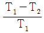
(정답률: 74%)
40. 2단 압축 냉동 장치 내 중간 냉각기 설치에 대한 설명으로 옳은 것은?
- 냉동효과를 증대시킬 수 있다.
- 증발기에 공급되는 냉매액을 과열시킨다.
- 저압 압축기 흡입가스 중의 액을 분리시킨다.
- 압축비가 증가되어 압축효율이 저하된다.
(정답률: 71%)
3과목: 공기조화
41. 난방부하 계산 시 일반적으로 무시할 수 있는 부하의 종류가 아닌 것은?
- 틈새바람 부하
- 조명기구 발열 부하
- 재실자 발생 부하
- 일사 부하
(정답률: 60%)
42. 습공기의 상태변화를 나타내는 방법 중 하나인 열수분비의 정의로 옳은 것은?
- 절대습도 변화량에 대한 잠열량 변화량의 비율
- 절대습도 변화량에 대한 전열량 변화량의 비율
- 상대습도 변화량에 대한 현열량 변화량의 비율
- 상대습도 변화량에 대한 잠열량 변화량의 비율
(정답률: 54%)
43. 온수관의 온도가 80℃, 환수관의 온도가 60℃인 자연순환식 온수난방장치에서의 자연순환수두(mmAq)는? (단, 보일러에서 방열기까지의 높이는 5m, 60℃에서의 온수 밀도는 983.24 kg/m3, 80℃에서의 온수 밀도는 971.84kg/m3 이다.)
- 55
- 56
- 57
- 58
(정답률: 51%)
44. 온수난방 배관방식에서 단관식과 비교한 복관식에 대한 설명으로 틀린 것은?
- 설비비가 많이 든다.
- 온도변화가 많다.
- 온수 순환이 좋다.
- 안정성이 높다.
(정답률: 75%)
45. 극간풍이 비교적 많고 재실 인원이 적은 실의 중앙 공조방식으로 가장 경제적인 방식은?
- 변풍량 2중덕트 방식
- 팬코일 유닛 방식
- 정풍량 2중덕트 방식
- 정풍량 단일덕트 방식
(정답률: 48%)
46. 덕트 설계시 주의사항으로 틀린 것은?
- 장방형 덕트 단면의 종횡비는 가능한 한 6:1 이상으로 해야 한다.
- 덕트의 풍속은 15m/s 이하, 정압은 50 mmAq 이하의 저속덕트를 이용하여 소음을 줄인다.
- 덕트의 분기점에는 댐퍼를 설치하여 압력 평행을 유지시킨다.
- 재료는 아연도금강판, 알루미늄판 등을 이용하여 마찰저항 손실을 줄인다.
(정답률: 66%)
47. 공장에 12kW의 전동기로 구동되는 기계 장치 25대를 설치하려고 한다. 전동기는 실내에 설치하고 기계 장치는 실외에 설치한다면 실내로 취득되는 열량(kW)은? (단, 전동기의 부하율은 0.78, 가동율은 0.9, 전동기 효율은 0.87 이다.)(오류 신고가 접수된 문제입니다. 반드시 정답과 해설을 확인하시기 바랍니다.)
- 242.1
- 210.6
- 44.8
- 31.5
(정답률: 43%)
48. 공기세정기에서 순환수 분무에 대한 설명으로 틀린 것은? (단, 출구 수온은 입구 공기의 습구온도와 같다.)
- 단열변화
- 증발냉각
- 습구온도 일정
- 상대습도 일정
(정답률: 52%)
49. 전압기준 국부저항계수
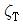
와 정압기준 국부저항계수 와의 관계를 바르게 나타낸 것은? (단, 덕트 상류 풍속은 v1, 하류 풍속은 v2 이다.)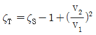
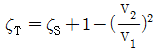
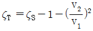
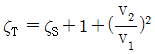
(정답률: 64%)
50. 공기세정기에 대한 설명으로 틀린 것은?
- 세정기 단면의 종횡비를 크게 하면 성능이 떨어진다.
- 공기세정기의 수·공기비는 성능에 영향을 미친다.
- 세정기 출구에는 분무된 물방울의 비산을 방지하기 위해 루버를 설치한다.
- 스프레이 헤더의 수를 뱅크(bank)라 하고 1본을 1뱅크, 2본을 2뱅크라 한다.
(정답률: 69%)
51. 실내의 CO2, 농도기준이 1000ppm 이고, 1인당 CO2 발생량이 18L/h인 경우, 실내 1인당 필요한 환기량(m3/h)은? (단, 외기 CO2농도는 300 ppm 이다.)
- 22.7
- 23.7
- 25.7
- 26.7
(정답률: 60%)
52. 타원형 덕트(flat oval duct)와 같은 저항을 갖는 상당직경 De를 바르게 나타낸 것은? (단, A는 타원형 덕트 단면적, P는 타원형 덕트 둘레길이이다.)
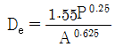
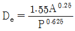
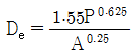
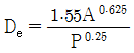
(정답률: 39%)
53. 압력 1MPa, 건도 0.89인 습증기 100kg을 일정 압력의 조건에서 엔탈피가 3⑤2 kJ/kg인 300℃의 과열증기로 되는데 필요한 열량(kJ)은? (단, 1MPa에서 포화액의 엔탈피는 759 kJ/kg, 증발잠열은 2018 kJ/kg이다.)
- 44208
- 49698
- 229311
- 103432
(정답률: 39%)
54. EDR(Equivalent Direct Radiation)에 관한 설명으로 틀린 것은?
- 증기의 표준방열량은 650 kcal/m2·h 이다.
- 온수의 표준방열량은 450 kcal/m2·h 이다.
- 상당 방열면적을 의미한다.
- 방열기의 표준방열량을 전방열량으로 나눈 값이다.
(정답률: 71%)
55. 증기난방 방식에 대한 설명으로 틀린 것은?
- 환수방식에 따라 중력환수식과 진공환수식, 기계환수식으로 구분한다.
- 배관방법에 따라 단관식과 복관식이 있다.
- 예열시간이 길지만 열량 조절이 용이하다.
- 운전 시 증기 해머로 인한 소음을 일으키기 쉽다.
(정답률: 74%)
56. 어떤 냉각기의 1열(列) 코일의 바이패스 펙터가 0.65 라면 4열(列)의 바이패스 펙터는 약 얼마가 되는가?
- 0.18
- 1.82
- 2.83
- 4.84
(정답률: 55%)
57. 다음 냉방부하 요소 중 잠열을 고려하지 않아도 되는 것은?
- 인체에서의 발생열
- 커피포트에서의 발생열
- 유리를 통과하는 복사열
- 틈새바람에 의한 취득열
(정답률: 59%)
58. 냉수 코일설계 기준에 대한 설명으로 틀린 것은?
- 코일은 관이 수평으로 놓이게 설치한다.
- 관 내 유속은 1m/s 정도로 한다.
- 공기 냉각용 코일의 열 수는 일반적으로 4~8열이 주로 사용된다.
- 냉수 입·출구 온도차는 10℃ 이상으로 한다.
(정답률: 68%)
59. 다음 용어에 대한 설명으로 틀린 것은?
- 자유면적 : 취출구 혹은 흡입구 구멍면적의 합계
- 도달거리 : 기류의 중심속도가 0.25m/s에 이르렀을 때, 취출구에서의 수평거리
- 유인비 : 전공기량에 대한 취출공기량(1차 공기)의 비
- 강하도 : 수평으로 취출된 기류가 일정 거리만큼 진행한 뒤 기류정심선과 취출구 중심과의 수직거리
(정답률: 54%)
60. 덕트의 마찰저항을 증가시키는 요인 중 값이 커지면 마찰저항이 감소되는 것은?
- 덕트 재료의 마찰저항 계수
- 덕트 길이
- 덕트 직경
- 풍속
(정답률: 76%)
4과목: 전기제어공학
61. 정격주파수 60 Hz의 농형 유도전동기를 50Hz의 정격전압에서 사용할 때, 감소하는 것은?
- 토크
- 온도
- 역률
- 여자전류
(정답률: 59%)
62. 그림과 같은 피드백 회로의 종합 전달함수는?
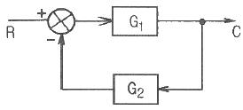
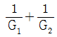
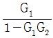
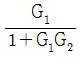
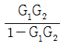
(정답률: 69%)
63. 도체가 대전된 경우 도체의 성질과 전하 분포에 관한 설명으로 틀린 것은?
- 도체 내부의 전계는 ∞ 이다.
- 전하는 도체 표면에만 존재한다.
- 도체는 등전위이고 표면은 등전위면이다.
- 도체 표면상의 전계는 면에 대하여 수직이다.
(정답률: 52%)
64. 어떤 교류전압의 실효값이 100V 일 때 최대값은 약 몇 V 가 되는가?
- 100
- 141
- 173
- 200
(정답률: 63%)
65. PLC(Programmable Logic Controller)에서, CPU부의 구성과 거리가 먼 것은?
- 연산부
- 전원부
- 데이터 메모리부
- 프로그램 메모리부
(정답률: 70%)
66. 제어대상의 상태를 자동적으로 제어하며, 목표값이 제어 공정과 기타의 제한 조건에 순응하면서 가능한 가장 짧은 시간에 요구되는 최종상태까지 가도록 설계하는 제어는?
- 디지털제어
- 적응제어
- 최적제어
- 정치제어
(정답률: 64%)
67. 90Ω의 저항 3개가 △결선으로 되어 있을 때, 상당(단상) 해석을 위한 등가 Y결선에 대한 각 상의 저항 크기는 몇 Ω 인가?
- 10
- 30
- 90
- 120
(정답률: 63%)
68. 다음과 같은 회로에 전압계 3대와 저항 10Ω을 설치하여 V1=80V, V2=20V, V3=100V 의 실효치 전압을 계측하였다. 이 때 순저항 부하에서 소모하는 유효전력은 몇 W 인가?
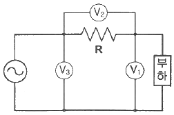
- 160
- 320
- 460
- 640
(정답률: 29%)
69. G(jω)=e-jω0.4일 때 ω=2.5 에서의 위상각은 약 몇 도인가?
- -28.6
- -42.9
- -57.3
- -71.5
(정답률: 50%)
70. 여러 가지 전해액을 이용한 전기분해에서 동일량의 전기로 석출되는 물질의 양은 각각의 화학당량에 비례한다고 하는 법칙은?
- 줄의 법칙
- 렌츠의 법칙
- 쿨롱의 법칙
- 패러데이의 법칙
(정답률: 53%)
71. 과도 응답의 소멸되는 정도를 나타내는 감쇠비(decay ratio)로 옳은 것은?
- 제2오버슈트 / 최대오버슈트
- 제4오버슈트 / 최대오버슈트
- 최대오버슈트 / 제2오버슈트
- 최대오버슈트 / 제4오버슈트
(정답률: 52%)
72. 유도전동기에서 슬립이 '0'이란 의미와 같은 것은?
- 유도제동기의 역할을 한다.
- 유도전동기가 정지상태이다.
- 유도전동기가 전부하 운전상태이다.
- 유도전동기가 동기속도로 회전한다.
(정답률: 69%)
73. 제어장치가 제어대상에 가하는 제어신호로 제어장치의 출력인 동시에 제어대상의 입력인 신호는?
- 조작량
- 제어량
- 목표값
- 동작신호
(정답률: 47%)
74. 200V, 1kW 전열기에서 전열선의 길이를 1/2로 할 경우, 소비전력은 몇 kW 인가?
- 1
- 2
- 3
- 4
(정답률: 58%)
75. 제어계의 분류에서 엘리베이터에 적용되는 제어 방법은?
- 정치제어
- 추종제어
- 비율제어
- 프로그램제어
(정답률: 75%)
76. 다음 설명은 어떤 자성체를 표현한 것인가?
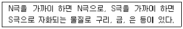
- 강자성체
- 상자성체
- 반자성체
- 초강자성체
(정답률: 65%)
77. 단위 피드백 제어계통에서 입력과 출력이 같다면 전향전달함수 G(s)의 값은?
- 0
- 0.707
- 1
- ∞
(정답률: 33%)
78. 제어계의 과도응답특성을 해석하기 위해 사용하는 단위계단입력은?
- δ(t)
- u(t)
- -3tu(t)
- sin(120πt)
(정답률: 66%)
79. 추종제어에 속하지 않는 제어량은?
- 위치
- 방위
- 자세
- 유량
(정답률: 67%)
80. PI 동작의 전달함수는? (단, KP는 비례감도이고, TI는 적분시간이다.)
- KP
- KPsTI
- KP(1+sTI)
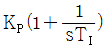
(정답률: 68%)
5과목: 배관일반
81. 냉동장치의 배관공사가 완료된 후 방열공사의 시공 및 냉매를 충전하기 전에 전 계통에 걸쳐 실시하며, 진공 시험으로 최종적인 기밀 유무를 확인하기 전에 하는 시험은?
- 내압시험
- 기밀시험
- 누설시험
- 수압시험
(정답률: 58%)
82. 가스미터를 구조상 직접식(실측식)과 간접식(추정식)으로 분류된다. 다음 중 직접식 가스미터는?
- 습식
- 터빈식
- 벤튜리식
- 오리피스식
(정답률: 48%)
83. 전기가 정전되어도 계속하여 급수를 할 수 있으며 급수오염 가능성이 적은 급수방식은?
- 압력탱크 방식
- 수도직결 방식
- 부스터 방식
- 고가탱크 방식
(정답률: 61%)
84. 배관작업용 공구의 설명으로 틀린 것은?
- 파이프 리머(pipe reamer) : 관을 파이프커터 등으로 절단한 후 관 단면의 안쪽에 생긴 거스러미(burr)를 제거
- 플레어링 틀(flaring tooils) : 동관을 압축이음 하기 위하여 관 끝을 나팔모양으로 가공
- 파이프 바이스(pipe vice) : 관을 절단하거나 나사이음을 할 때 관이 움직이지 않도록 고정
- 사이징 툴(sizing tools) : 동일지름의 관을 이음쇠 없이 납땜이음을 할 때 한쪽 관 끝을 소켓모양으로 가공
(정답률: 67%)
85. LP가스 공급, 소비 설비의 압력손실 요인으로 틀린 것은?
- 배관의 입하에 의한 압력손실
- 엘보, 티 등에 의한 압력손실
- 배관의 직관부에서 일어나는 압력손실
- 가스미터, 콕크, 밸브 등에 의한 압력손실
(정답률: 63%)
86. 통기관의 설치 목적으로 가장 거리가 먼 것은?
- 배수의 흐름을 원활하게 하여 배수관의 부식을 방지한다.
- 봉수가 사이펀 작용으로 파괴되는 것을 방지한다.
- 배수계통 내에 신선한 공기를 유입하기 위해 환기시킨다.
- 배수계통 내의 배수 및 공기의 흐름을 원활하게 한다.
(정답률: 52%)
87. 배관의 끝을 막을 때 사용하는 이음쇠는?
- 유니언
- 니플
- 플러그
- 소켓
(정답률: 67%)
88. 아래 저압가스 배관의 직경(D)을 구하는 식에서 S가 의미하는 것은? (단, L은 관의 길이를 의미한다.)
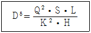
- 관의 내경
- 공급 압력 차
- 가스 유량
- 가스 비중
(정답률: 70%)
89. 다음 장치 중 일반적으로 보온, 보냉이 필요한 것은?
- 공조기용의 냉각수 배관
- 방열기 주변 배관
- 환기용 덕트
- 급탕배관
(정답률: 67%)
90. 순동 이음쇠를 사용할 때에 비하여 동합금 주물 이음쇠를 사용할 때 고려할 사항으로 가장 거리가 먼 것은?
- 순동 이음쇠 사용에 비해 모세관 현상에 의한 용융 확산이 어렵다.
- 순동 이음쇠와 비교하여 용접재 부착력은 큰 차이가 없다.
- 순동 이음쇠와 비교하여 냉벽 부분이 발생할 수 있다.
- 순동 이음쇠 사용에 비해 열팽창의 불균일에 의한 부정적 틈새가 발생할 수 있다.
(정답률: 69%)
91. 보온 시공시 외피의 마무리재로서 옥외 노출부에 사용되는 재료로 사용하기에 가장 적당한 것은?
- 면포
- 비닐 테이프
- 방수 마포
- 아연 철판
(정답률: 59%)
92. 급수방식 중 급수량의 변화에 따라 펌프의 회전수를 제어하여 급수압을 일정하게 유지할 수 있는 회전수 제어시스템을 이용한 방식은?
- 고가수조방식
- 수도직결방식
- 압력수조방식
- 펌프직송방식
(정답률: 62%)
93. 보일러 등 압력용기와 그 밖에 고압 유체를 취급하는 배관에 설치하여 관 또는 용기 내의 압력이 규정 한도에 달하면 내부 에너지를 자동적으로 외부에 방출하여 항상 안전한 수준으로 압력을 유지하는 밸브는?
- 감압 밸브
- 온도 조절 밸브
- 안전 밸브
- 전자 밸브
(정답률: 58%)
94. 밀폐 배관계에서는 압력계획이 필요하다. 압력계획을 하는 이유로 틀린 것은?
- 운전 중 배관계 내에 대기압보다 낮은 개소가 있으면 접속부에서 공기를 흡입할 우려가 있기 때문에
- 운전 중 수온에 알맞은 최소압력 이상으로 유지하지 않으면 순환수 비등이나 플래시 현상 발생 우려가 있기 때문에
- 펌프의 운전으로 배관계 각 부의 압력이 감소하므로 수격작용, 공기정체 등의 문제가 생기기 때문에
- 수온의 변화에 의한 체적의 팽창·수축으로 배관 각부에 악영향을 미치기 때문에
(정답률: 56%)
95. 다음 중 난방 또는 급탕설비의 보온재료로 가장 부적합한 것은?
- 유리 섬유
- 발포폴리스티렌폼
- 암면
- 규산칼슘
(정답률: 59%)
96. 배수의 성질에 따른 구분에서 수세식 변기의 대·소변에서 나오는 배수는?
- 오수
- 잡배수
- 특수배수
- 우수배수
(정답률: 78%)
97. 리버스 리턴 배관 방식에 대한 설명으로 틀린 것은?
- 각 기기 간의 배관회로 길이가 거의 같다.
- 저항의 밸런싱을 취하기 쉽다.
- 개방회로 시스템(open loop system)에서 권장된다.
- 환수관이 2중이므로 배관 설치 공간이 커지고 재료비가 많이 든다.
(정답률: 59%)
98. 패러렐 슬라이브 밸브(parallel slide valve)에 대한 설명으로 틀린 것은?
- 평행한 두 개의 밸브 몸체 사이에 스프링이 삽입되어 있다.
- 밸브 몸체와 디스크 사이에 시트가 있어 밸브 측면의 마찰이 적다.
- 쐐기 모양의 밸브로서 쐐기의 각도는 보통 6~8° 이다.
- 밸브 시트는 일반적으로 경질금속을 사용한다.
(정답률: 54%)
99. 5세주형 700mm의 주철제 방열기를 설치하여 증기온도가 110℃, 실내 공기온도가 20℃이며 난방부하가 29kW일 때 방열기의 소요쪽수는? (단, 방열계수는 8 W/m2·℃, 1쪽당 방열면적은 0.28 m2 이다.)
- 144쪽
- 154쪽
- 164쪽
- 174쪽
(정답률: 60%)
100. 다음 중 열팽창에 의한 관의 신축으로 배관의 이동을 구속 또는 제한하는 장치가 아닌 것은?
- 앵커(anchor)
- 스토퍼(stopper)
- 가이드(guide)
- 인서트(insert)
(정답률: 70%)
Δs = cp ln(T2/T1) - R ln(P2/P1)
여기서 cp는 정압비열, R은 기체상수이다. 따라서,
Δs = 1.006 ln(330/290) - 0.287 ln(600/200)
= 0.445 kJ/(kg·K)
하지만 문제에서는 단위 질량당 엔트로피 변화를 구하라고 했으므로, 위 결과를 단위 질량당으로 나눠주어야 한다.
Δs' = Δs / m
여기서 m은 단위 질량의 질량이므로, 공기의 경우 1kg이다. 따라서,
Δs' = 0.445 / 1
= 0.445 kJ/(kg·K)
하지만 보기에서는 답이 "-0.185"로 주어져 있다. 이는 계산 결과에 마이너스 부호가 붙은 값이다. 이유는 엔트로피 변화의 부호가 열의 흐름 방향과 반대되기 때문이다. 즉, 시스템에서 열이 흡수되면 엔트로피는 증가하고, 열이 방출되면 엔트로피는 감소한다. 이 문제에서는 공기가 초기 온도와 압력보다 높은 온도와 압력으로 변화하였으므로, 열이 시스템에 흡수되어 엔트로피가 증가한다. 따라서, 계산 결과에 마이너스 부호를 붙여야 한다.
따라서, 정답은 "-0.185"이다.